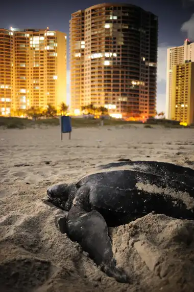
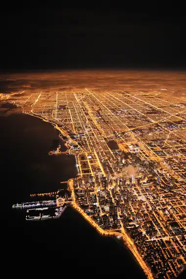
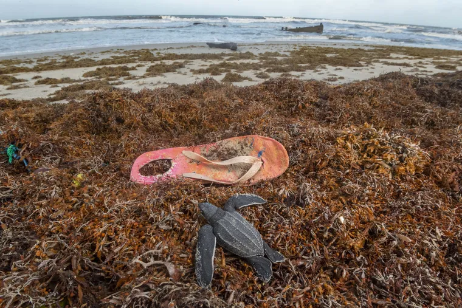
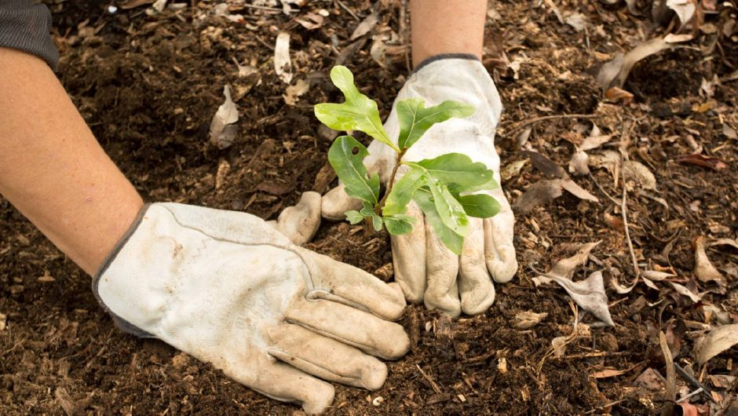

sustentabilidad
La sustentabilidad es un concepto amplio que abarca la capacidad de mantener el equilibrio entre el desarrollo económico, social
y ambiental a lo largo del tiempo, asegurando que las necesidades del presente se satisfagan sin comprometer la capacidad de las
futuras generaciones para satisfacer sus propias necesidades. En términos más detallados, la sustentabilidad implica adoptar
prácticas y políticas que minimicen el impacto negativo en el medio ambiente, promuevan la justicia social y económica, y
fomenten la eficiencia y la resiliencia en todos los aspectos de la vida humana. Esto incluye la conservación de recursos naturales,
la reducción de la huella de carbono, la promoción de la igualdad de oportunidades, la protección de la biodiversidad y el respeto
por los derechos humanos. En resumen, la sustentabilidad busca crear un mundo en el que las personas, la naturaleza y la economía
puedan coexistir armoniosamente a largo plazo.
Realmente vemos por todos lados el que hacer individualmente para ayudar al planeta pero en relidad eso no cambia mucho tampoco
Tú, individualmente, no puedes evitar que suba el nivel del mar, pero sí puedes proporcionar un pequeño refugio a las mariposas
monarca, en peligro de extinción, plantando unos cuantos bulbos de algodoncillo. ¿Esto que nos puede dar a entender?
En nuestro mundo actual necesitamos de una ayuda superior a la nuestra la cual nos la pueden dar todos los seres vivos del planeta
que aunque no lo creas cada accion que hacen se conecta con cada parte del mundo
Acciones
Estas acciones individuales pueden incluso marcar la diferencia en conjunto, sobre todo cuando la gente comparte información
y sus opciones sostenibles se extienden de vecino a vecino.
- 1. Apaga las luces
desactiva un interruptor para salvar a los pájaros, las abejas, las luciérnagas y todas las demás
criaturas voladoras nocturnas que se ven perjudicadas por la Contaminacion luminica
 
Izquierda:
La contaminación lumínica de esta playa dificulta la puesta de huevos de una hembra de tortuga laúd.
La luz disuade a las tortugas de llegar a las costas para anidar.
Derecha:
Desde arriba, las luces de Chicago, Estados Unidos, brillan con fuerza. Según un estudio, reducir a la mitad
la contaminación lumínica de la ciudad podría reducir la mortalidad de las aves.
Este tipo de contaminación puede parecer benigna, pero ha convertido la noche en día en un asombroso 80 % del mundo.
Esto no solo nubla nuestra visión de las estrellas, sino que altera las señales visuales que indican a la fauna cuándo migrar,cazar
y aparearse. Un estudio publicado en 2020 llegó incluso a la conclusión de que la contaminación lumínica, sumada a la amenaza de la
pérdida de hábitat y los pesticidas, pone en peligro de extinción a 2000 especies de luciérnagas.
Además de apagar las luces siempre que sea posible, los sensores de movimiento, los reguladores de intensidad y los protectores para
las luminarias que dirigen el resplandor nocturno hacia abajo pueden ayudar a reducir la contaminación lumínica.
- 2.Utilizar menos plástico

Una forma de utilizar menos plástico es llevar bolsas de tela, arpillera o reutilizar bolsas de plástico al momento de ir a comprar. Cada vez son más los supermercados que venden bolsas para evitar su uso y generar un gasto excedente al cliente y fomentar su reciclado, indica ONU.
- 3.Uso de medios de transporte sostenibles como la bicicleta o el transporte público
Puedes alternar el uso de un vehículo personal con tracción a diésel o gasolina realizando
trayectos cortos a pie o en bicicleta, esto reduce las emisiones de gases de efecto invernadero y mejora el rendimiento
de tu salud al hacer ejercicio físico, ademas de evitar La contaminacion atmosferica
ONU explica que utilizar un automóvil de manera consciente, sustituyéndolo incluso con la utilización del transporte público para trayectos más largos, puede reducir la huella de carbono en hasta 2 toneladas de CO2 al año.
- 4.Desperdiciar menos comida
 “Cuando tiras comida, también desperdicias los recursos y la energía que se utilizaron para cultivarla, producirla, envasarla y transportarla”, afirma el Organismo Internacional. Los alimentos en
descomposición, al igual que los desechos de animales, producen un gas de efecto invernadero llamado metano.
“Cuando tiras comida, también desperdicias los recursos y la energía que se utilizaron para cultivarla, producirla, envasarla y transportarla”, afirma el Organismo Internacional. Los alimentos en
descomposición, al igual que los desechos de animales, producen un gas de efecto invernadero llamado metano.
- 5. Plantar árboles y sembrar

Las plantas son fuente natural de vida y producen el oxígeno que respiran los seres vivos en la Tierra. Son esenciales para la naturaleza,
por lo tanto, ONU recomienda plantar un árbol o arbustos en tu hogar y/o en la comunidad donde vives.